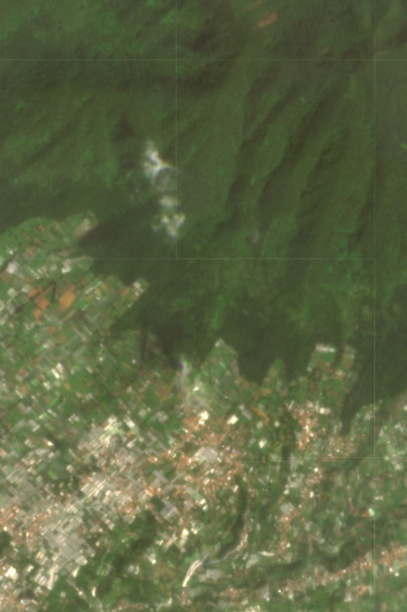
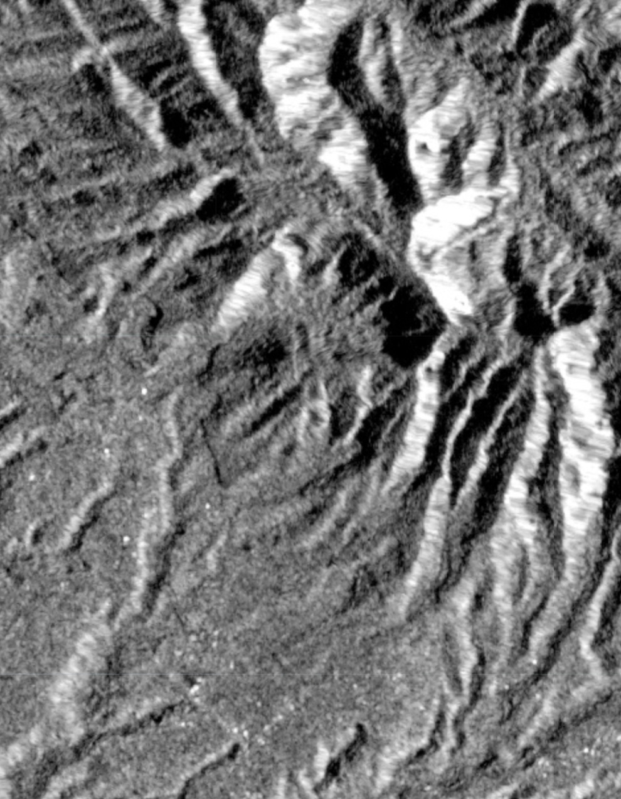

Penjelasan Analitik & Metode
Arsitektur Fusi Multi-Sensor & Ensemble ML
Alur kerja geokomputasi mendalam yang menggabungkan fisika gelombang mikro, indeks optik, dan pembelajaran mesin terpadu (Ensemble Machine Learning).

1. Penentuan Ground Truth Presisi (PlanetScope)
AI membutuhkan "guru" yang akurat. Kami menggunakan citra komersial satelit PlanetScope (resolusi 3 meter) pasca kejadian longsor ekstrem. Sistem mengevaluasi kalkulasi selisih Normalized Difference Vegetation Index (NDVI) sebelum dan sesudah kejadian pada piksel resolusi tinggi ini.
Dengan filter heuristik berlapis—seperti ambang batas reflektansi pita Near-Infrared (Band 8) dan penyaringan awan lokal (Band 2)—sistem mengekstraksi titik koordinat presisi tinggi yang 100% dipastikan sebagai area keruntuhan (Ground Truth Labels) untuk diberikan kepada model Machine Learning.

2. Fitur SAR & Ekstraksi Optikal Sentinel
Untuk memprediksi secara masif pada data publik, kami menggunakan satelit radar Sentinel-1. Kami memanfaatkan algoritma Normalized Radar Burn Ratio (NRBR). Saat longsor menyapu kanopi pohon (polarisasi silang VH) dan mengekspos tanah kosong/batuan datar (polarisasi VV), sifat hamburan balik gelombang mikro berubah drastis.
NRBR mengisolasi hilangnya vegetasi mendadak akibat gerakan tanah tanpa terhalang awan. Fitur SAR yang kuat ini kemudian disusun dalam tensor multi-dimensi bersama data indeks Optik (dNDVI, dGNDVI, dNDWI) dari Sentinel-2, serta fitur topografi (Elevasi & Slope NASADEM).

3. Fusi Pembelajaran Mesin: Ensemble Model
Pemetaan ambang batas tunggal (seperti hanya memakai NRBR < -0.05) rentan terhadap positif palsu (false positives) akibat aktivitas panen pertanian, pembangunan jalan, atau derau spekel radar. Untuk memecahkan anomali ini, kerangka kerja ini dirancang menggunakan Ensemble Machine Learning (RF + GBM).
- Random Forest (RF): Menggunakan teknik bagging (membangun banyak pohon keputusan yang independen) untuk mengurangi varians data (variance reduction) dan menekan overfitting yang sering muncul pada fitur SAR yang bising.
- Gradient Boosting Machine (GBM): Berjalan paralel secara boosting, di mana setiap pohon baru memperbaiki kesalahan dari pohon sebelumnya, secara ekstrem mengurangi bias model terhadap pola vegetasi yang rumit.
- Soft-Voting Mechanism: Probabilitas piksel keluaran dari RF dan GBM digabungkan dan dirata-ratakan secara matematis (soft-voting). Piksel yang disetujui oleh kedua model lalu dihaluskan dengan filter morfologi (focal mode radius 1 piksel) untuk mengeliminasi klasifikasi longsor yang terisolasi secara spasial (derau). Hasilnya adalah batas deteksi yang sangat presisi dengan konfidensi rata-rata di atas 65%.

4. Pemodelan Risiko Dinamis Terintegrasi (AHP)
Selain pemetaan diagnostik masa lalu, sistem juga mengeksekusi proyeksi kerentanan spasial (susceptibility) yang bertindak sebagai peringatan dini. Pemodelan raster kalkulatif di belakang layar menggunakan pembobotan Analytical Hierarchy Process (AHP) lima faktor pemicu utama:
Kemiringan Lereng (Bobot 30%)
Model elevasi NASADEM, memberikan penalti logaritmik eksponensial pada sudut lahan curam di atas batas kritis.
Presipitasi Anomali (Bobot 20%)
Satelit CHIRPS menghitung akumulasi curah hujan harian historis yang masuk sebagai tegangan hidro-statis pemicu kolaps.
Kerentanan Tutupan Lahan (20%)
Matriks peta Dynamic World memetakan zona terbangun (bangunan/jalan) tanpa penyangga akar pohon sebagai zona risiko maksimum.
Saturasi Kelembapan (Bobot 15%)
Data hidrologi FLDAS menilai kejenuhan tanah sebulan penuh (antecedent moisture) sebelum hujan utama tiba.
Fraksi Tanah Lempung (Bobot 15%)
Studi geologis global (OpenLandMap) menilai tingginya konsentrasi lempung (clay) yang bertindak layaknya sabun pemicu bidang gelincir bawah tanah saat basah.